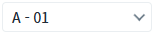
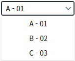
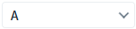
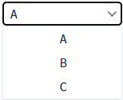
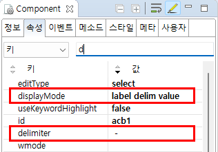

AutoComplete의 'displayMode' 속성과 'delimiter' 속성을 사용하여 선택 항목을 'label delimiter value' 형식으로 표시한 예제입니다.
Label, Value, delimiter를 이용한 선택 항목 표현
1
STEP 1: 선택된 항목의 표시 값 확인하기
예제 영역 "선택 항목의 표시 형식을 'Label - Value'로 설정"에 구성된 AutoComplete의 선택된 항목의 표시 값이 "Label - Value" 형식인 것을 확인합니다.Image 1.브라우저(Chrome) 실행 예시 - 선택된 항목 표시

2
STEP 2: 선택 항목의 표시 값 확인하기
컴포넌트의 목록 확장 아이콘을 클릭하여 선택 항목에 표시된 값이 "Label - Value" 형식인 것을 확인합니다.
Image 2.브라우저(Chrome) 실행 예시 - 선택 항목

1
STEP 1: 선택된 항목의 표시 값 확인하기
예제 영역 "(기본 설정)선택 항목의 표시 형식을 'Label'로 설정"에 구성된 AutoComplete의 선택된 항목의 표시 값이 "Label" 형식인 것을 확인합니다.Image 3.브라우저(Chrome) 실행 예시 - 선택된 항목 표시

2
STEP 2: 선택 항목의 표시 값 확인하기
컴포넌트의 목록 확장 아이콘을 클릭하여 선택 항목에 표시된 값이 "Label" 형식인 것을 확인합니다.
Image 4.브라우저(Chrome) 실행 예시 - 선택 항목

1
AutoComplete의 속성을 설정합니다.
[필수] displayMode="label delimiter value"
선택 항목의 표시 형식을 'label'과 'delimiter' 속성에 설정된 문자열, 그리고 'value'로 표시합니다.
[선택] delimiter="구분자"
속성 'displayMode'의 선택 항목 중 'delimiter'에 표시될 값입니다.
Image 5.웹스퀘어 스튜디오의 Component View 예시

Example 1.Source
<w2:autoComplete displayMode="label delim value" delimiter=" - "> <!-- 중략 --> </w2:autoComplete>